전투 화면에서 우리 편 6명이 전부 같은 그림을 쓰고 있었습니다. 이제 각자 자기 뒷모습을 갖습니다.
세 줄 요약
전투에서 우리 편은 등을 보이고 섭니다. 그런데 그 뒷모습 그림이 딱 한 장밖에 없었습니다. 그래서 6명 전원이 똑같은 보라색 생물로 보였습니다. 앞모습은 각자 다른데 뒷모습만 같으니, 누가 누군지 구분이 안 됐습니다.
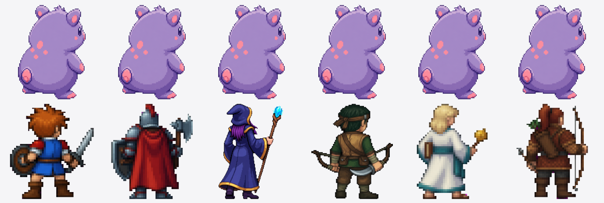
6명분 뒷모습을 만들었습니다. 각 그림은 712×712 픽셀이고, 앞모습과 같은 사람으로 보이게 머리색, 옷, 무기를 맞췄습니다. 시선도 오른쪽 위(적이 있는 쪽)를 보도록 그림 자체에 넣었습니다.
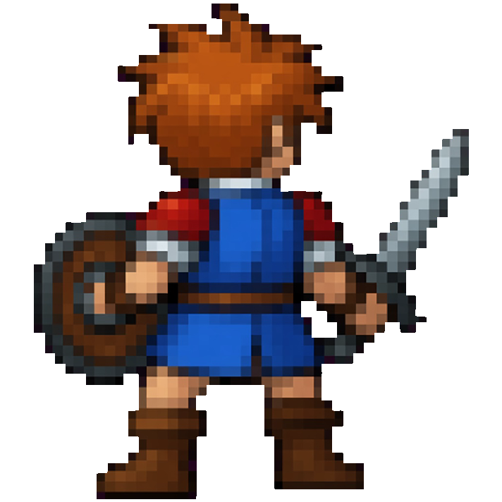
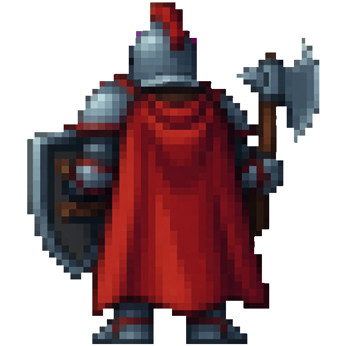
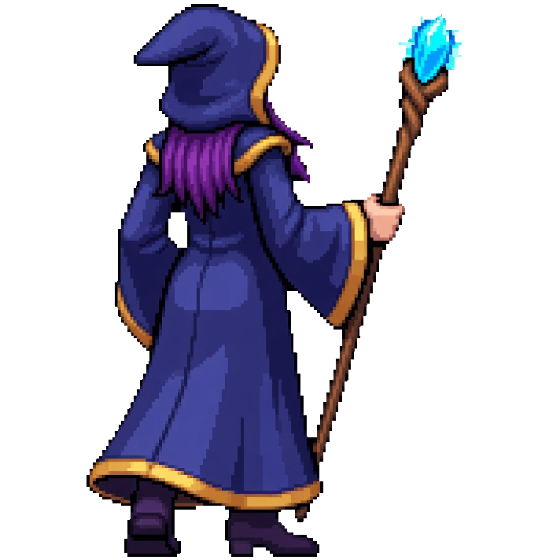
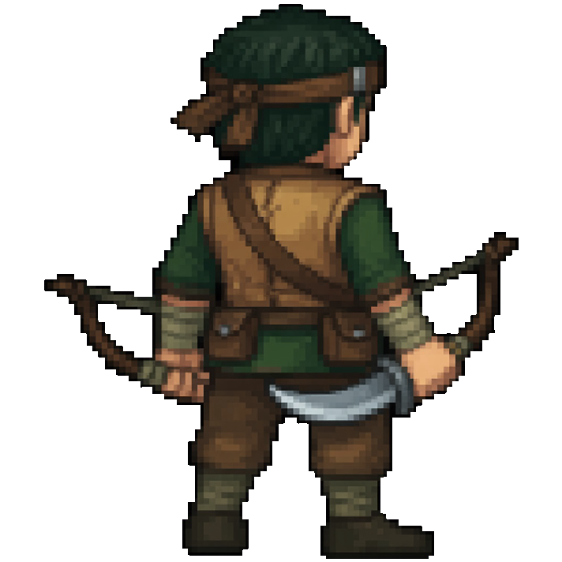
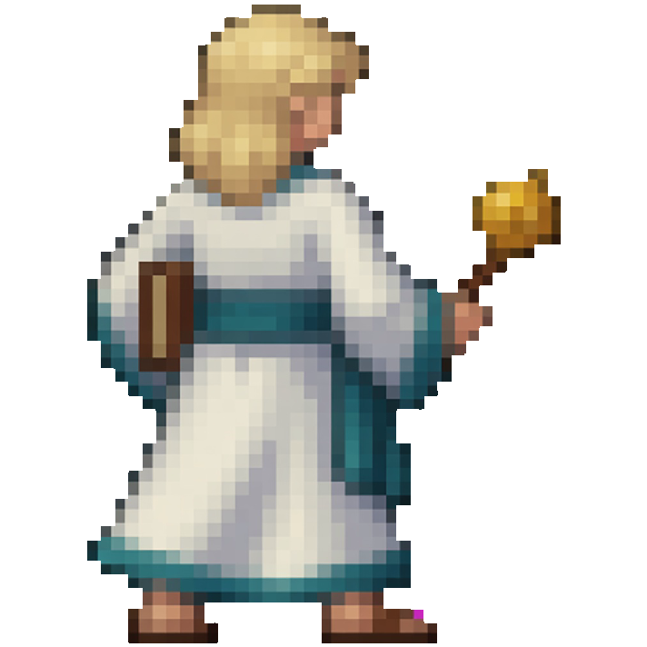
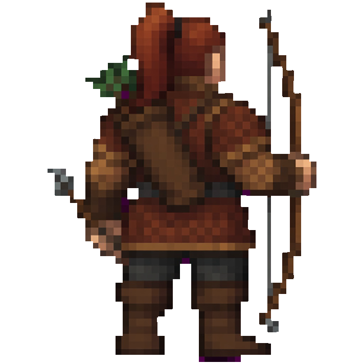
그림 파일 위치: public/assets/generated/battle-skins/sprites/hero-0N-back.png
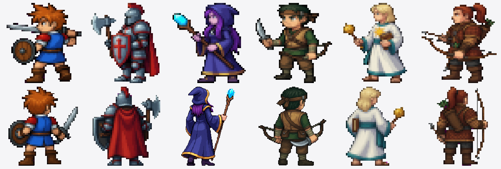
뒷모습만 예뻐도 소용이 없습니다. 앞모습과 같은 사람으로 보여야 합니다. 그래서 앞모습 시트와 나란히 놓고 비교했습니다.
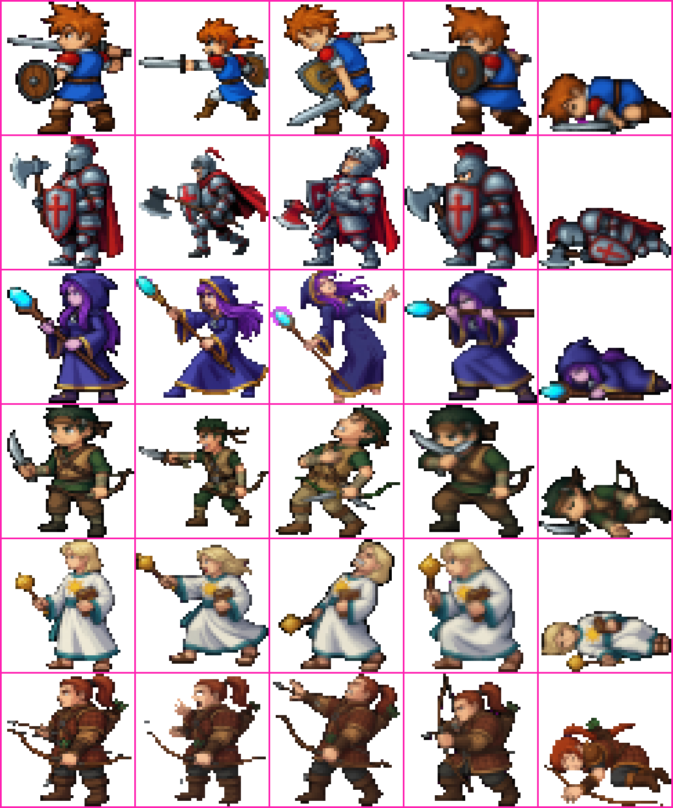
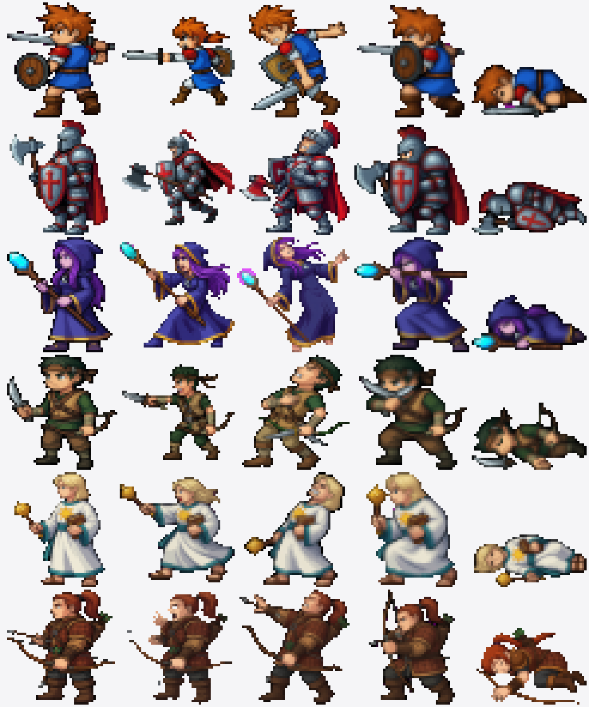
144×384(48px 칸 3열 8행)이고 그중 5칸만 씁니다.
아래 두 장이 같은 자리에서 찍은 전후입니다. 왼쪽이 예전 공용 그림, 오른쪽이 주인공 전용 뒷모습입니다. 둘 다 프레임 안에 온전히 들어옵니다.
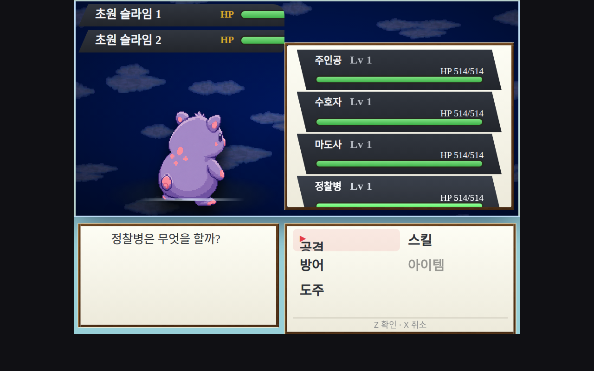
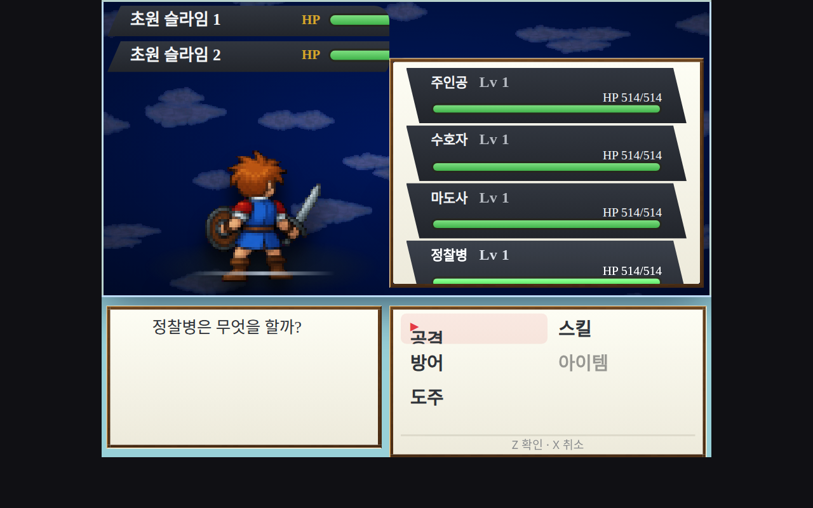
실측값
하네스가 렌더된 요소를 직접 재서 남긴 값입니다. 6명 전원 동일합니다.
box=218×210 · natural=712×712 · transform=none
필드에서 보이는 높이는 약 468px이므로 210px 그림은 여유 있게 들어갑니다.
transform=none은 노드에 추가 확대가 걸리지 않았다는 뜻입니다.
참고 — 이 작업을 처음 검증할 때 쓰던 베이스(404 커밋 이전)에서는 같은 그림이
533×515로 그려져 머리만 보였습니다. 대기 애니메이션 키프레임에 옛 scale(2.45)가
남아 있었기 때문이고, 그 키프레임은 현재 main 에서 이미 제거됐습니다.
이 보고서의 수치는 main 위로 리베이스한 뒤 다시 찍은 것입니다.
스킨을 바꿔도 같은 코드가 제자리에 그리는지 대조군으로 한 장 더 찍었습니다. 같은 인물, 스킨만 RM식으로 바꾼 화면입니다.
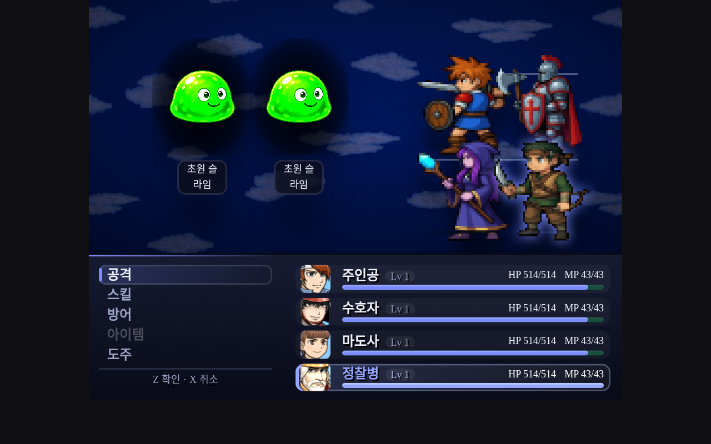
scale(1.25)가 걸린 180×180으로 섭니다.
스킨마다 크기 규칙이 따로 있다는 뜻이라, 한쪽을 고칠 때 다른 쪽을 같이 재야 합니다.
(이 스킨은 정면을 쓰므로 뒷모습 그림은 나오지 않습니다.)
핵심은 "아군 뒷모습을 그릴 때 그 배우 전용 그림이 있으면 그걸 먼저 쓴다"입니다. 없으면 예전 공용 그림으로 돌아갑니다.
| 파일 | 한 일 |
|---|---|
src/player/battleFieldDom.ts | 배우별 뒷모습 그림을 찾아 붙입니다. 못 찾으면 예전 그림으로 돌아갑니다. |
src/battle/battlePose.ts | 자세를 시트의 몇 번째 칸으로 읽을지 정하는 계산. |
src/assets/generatedAssetManifest.ts | 새 그림 6장을 자산 목록에 등록. |
defaultDatabasePartyRecords.ts | 성직자와 궁수가 남의 시트를 돌려 쓰던 걸 끊고 자기 시트(hero-05/06)를 줬습니다. |
modernNocturneGame.ts | 데모가 기본 DB에서 적을 건져 쓰던 방식을 버리고 자기 적 2종을 직접 갖게 했습니다. |
defaultDatabaseBattleRecords.ts | 스탯이 규칙적으로 증가하는 더미 적 레코드 231건을 기본 DB에서 제거. |
backBattlerGazeContract.test.ts — 뒷모습이 적 방향을 보는지battleFieldAllySprite.test.ts — 아군 슬롯이 배우별 그림을 집어오는지battlerPoseFrame.test.ts — 자세 칸 계산이 맞는지spriteProcess.test.ts — 그림 후처리(배경 제거, 자르기)가 맞는지세 가지가 남아 있습니다. 모두 이번 작업과 무관하게 main 에서 재현되는 문제이고, 각각 main 을 직접 돌려 확인했습니다.
1적 스프라이트가 필드에서 안 보임
위 스크린샷의 필드에 적이 없습니다. 위쪽 HP 바에는 "초원 슬라임 1·2"가 떠 있는데 그림은 화면에 없습니다. 포켓몬 배치는 적을 오른쪽에 두는데, 그 자리를 오른쪽 파티 상태창이 덮고 있습니다. 아군 뒷모습과는 다른 계통(적 배치·패널 겹침)이라 이번 작업에서 건드리지 않았습니다. main 기준으로 재현되는 상태입니다.
2테스트 3개 실패
시작 파티가 4명이어야 하는데 2명으로 나오고, 적 그림 하나(리프링)가 연결되지 않습니다. 제 변경을 전부 치우고 원래 코드에서 돌려도 똑같은 3개가 똑같이 실패합니다. 즉 제가 깨뜨린 게 아닙니다.
defaultDatabase.test.ts — 시작 파티 4명 기대, 실제 2명 (2건)dbImageMatching.test.ts — 리프링 적 그림 연결 없음 (1건)3npm run typecheck 실패
tsconfig.json이 쓰는 baseUrl 옵션이 지금 TypeScript에서 없어졌습니다(TS5102, TS5090).
이것도 원래 코드에서 그대로 재현됩니다. 범위 밖이라 손대지 않았습니다.
| 항목 | 결과 |
|---|---|
| 통과 | 51 |
| 실패 | 3 (전부 기존 실패) |
| 이번 작업이 새로 깨뜨린 것 | 0 |
확인용 화면은 verify-shots/back-battler-qa/, 그림 모음은
reports/actor-battle-sprites/에 있습니다. 커밋은 아직 하지 않았습니다.